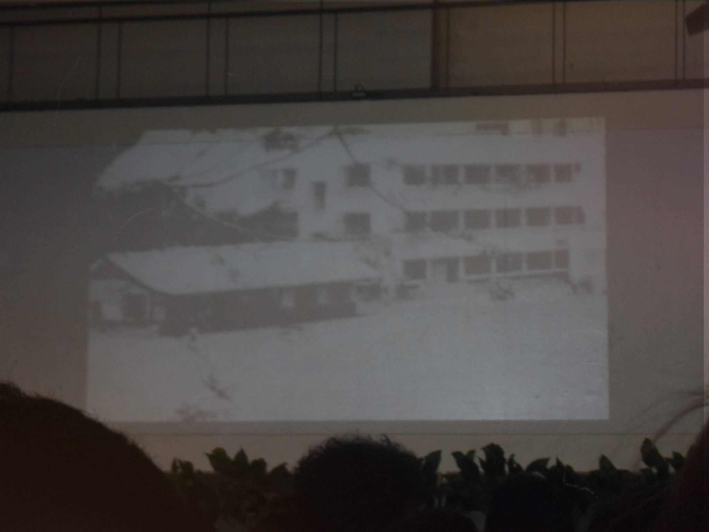
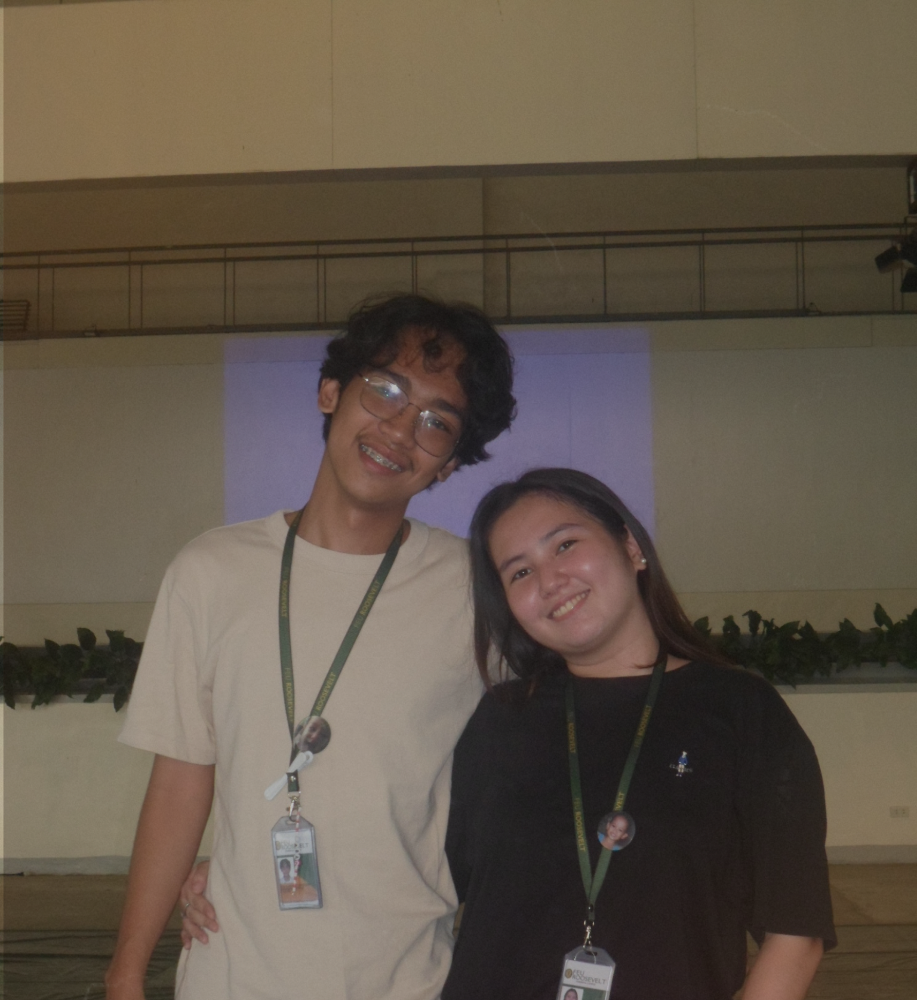
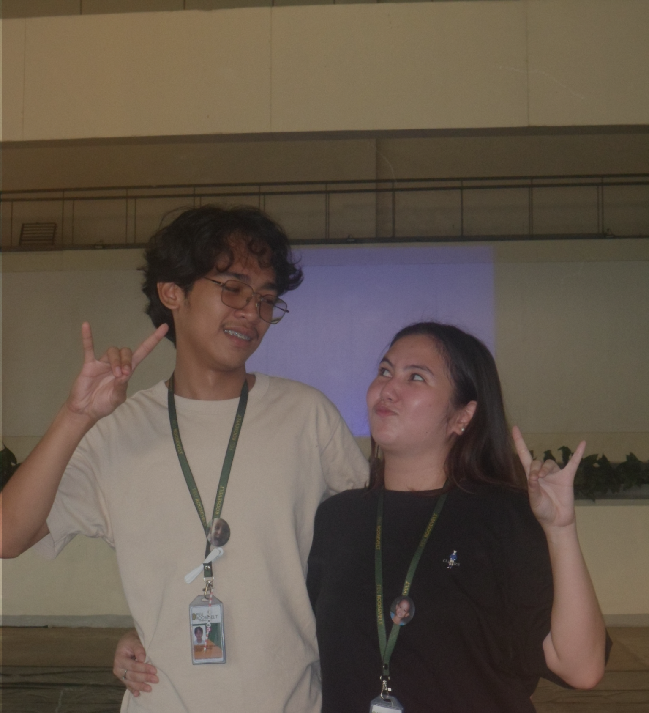

Be Brave | Story of Feu
This was our first session in our FEUR Journey subject, and it focused on the history of Far Eastern University.
We learned a lot about the University's background and gained a deeper appreciation for its legacy.
The session also included a fun game with questions about the history of Roosevelt,
which made the learning experience more engaging and enjoyable.



